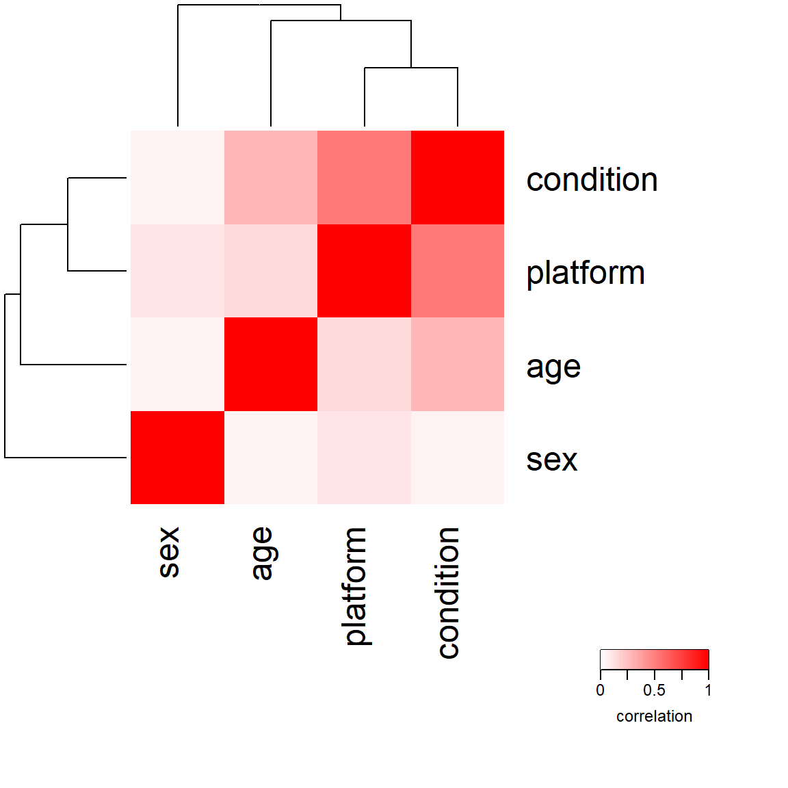
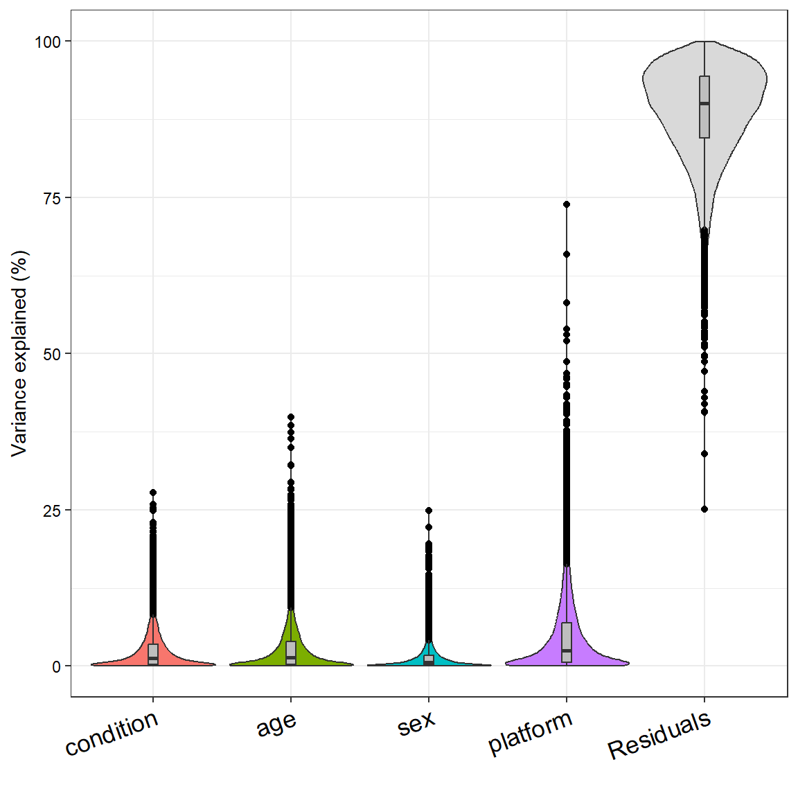

RNA-Seq Analysis Part 3: Metadata Correlation and Variance Partitioning Analysis
RNA-seq
analysis
tutorial
Author
Robin Schäper
Published
April 14, 2026
Introduction
Welcome to part 3 of our RNA-seq analysis series! This time we will discuss one of my favorite topics: Confounding variables and variance partitioning analysis. We will learn why it is important to correlate metadata variables before formulating our hypotheses on cause and effect about anything biological. Furthermore, we will quantify the variance explaioned by our condition of interest and other metadata to gauge how much signal we can expect to find in our data and what truly drives differences in gene expression between samples here.
We have already prepared our data and generated the DESeqDataSet object, which contains both the count matrix and the metadata, in the previous part of this series. The gist of this preliminary work is contained in the folded code chunk below.
Code
#load necessary librarieslibrary(here) # for file pathslibrary(DESeq2) # for RNA-seq analysislibrary(biomaRt) # for gene annotation# Downloading the count matrixurl <-"https://www.ncbi.nlm.nih.gov/geo/download/?acc=GSE123658&format=file&file=GSE123658%5Fread%5Fcounts%2Egene%5Flevel%2Etxt%2Egz"dest <-here("data", "rnaseq", "GSE123658_counts.tsv.gz")download.file(url, destfile = dest)# Loading the count matrixcounts <-read.delim(dest, row.names =1)# Remove "X" prefix from column namescolnames(counts) <-sub("^X", "", colnames(counts))# require genes to have a count of 10 or more in at least 5 samples to be included in the analysiskeep <-rowSums(counts >=10) >=5counts <- counts[keep, ]# Loading the metadatalibrary(GEOquery) # for loading data from GEOgse <-getGEO("GSE123658", GSEMatrix =TRUE)# Combine metadata from both platforms into a single data frameeset_nextseq <- gse[["GSE123658-GPL18573_series_matrix.txt.gz"]]eset_hiseq <- gse[["GSE123658-GPL20301_series_matrix.txt.gz"]]meta <-rbind(pData(eset_nextseq),pData(eset_hiseq))meta$sample_id <-sub(".*ID:", "", meta$title)meta$sample_id <-trimws(meta$sample_id)# set row names of metadata to sample_idrownames(meta) <- meta$sample_id# define factor condition based on the title columnmeta$condition <-ifelse(grepl("healthy", meta$title, ignore.case =TRUE),"control","disease")meta$condition <-factor(meta$condition, levels =c("control", "disease"))# define factor platform based on the platform_id columnmeta$platform <-ifelse(grepl("GPL18573", meta$platform_id),"NextSeq","HiSeq")meta$platform <-factor(meta$platform, levels =c("NextSeq", "HiSeq"))# define age as numeric variablemeta$age <-as.numeric(meta$`age:ch1`)# define sex as a factor variablemeta$sex <-factor(meta$`Sex:ch1`, levels =c("M", "F"))# Aligning the count matrix and metadatameta <- meta[match(colnames(counts), rownames(meta)), ]# Create a mapping between Ensembl gene IDs and gene symbols# Allow some more time for the http requestoptions(timeout =300)ensembl <-useMart(biomart ="ENSEMBL_MART_ENSEMBL",dataset ="hsapiens_gene_ensembl",host ="https://www.ensembl.org")genes <-rownames(counts)mapping <-getBM(attributes =c("ensembl_gene_id", "hgnc_symbol"),filters ="ensembl_gene_id",values = genes,mart = ensembl)# Create a named vector for mapping Ensembl gene IDs to gene symbolsgene_symbols <-setNames(mapping$hgnc_symbol, mapping$ensembl_gene_id)# Create DESeqDataSet objectdds <-DESeqDataSetFromMatrix(countData = counts,colData = meta,design =~ platform + condition)# Add gene symbols as row datarowData(dds)$symbol <- gene_symbols[rownames(dds)]dds <-estimateSizeFactors(dds)# Perform variance stabilizing transformation to reduce mean-variance dependencevsd <-vst(dds, blind =TRUE)mat <-assay(vsd)
Exploring explainatory (metadata) variables
In the context of a clinical study we track various metadata variables, such as the condition of interest (e.g. disease vs control), age, sex, medication, alongside technical variables like the sequencing platform. I’m always curious to see how these variables correlate with each other and which of them explain the most variance in our data. For example, we might find out that a certain medication is highly correlated with a certain condition. Then we should always be aware that the observed effects in our data might be driven by the medication rather than the condition itself, which is important for coming up with strong hypotheses. Or we might discover that the age of patients explains more variance in our data than the condition of interest, which should make us reconsider our experimental design (e.g. by including age as a covariate in our analysis or by matching cases and controls by age during subject recruitment).
Correlation of metadata variables with each other (confounding variables)
The (probably) most decisive metadata variables in our dataset are the condition of interest (disease vs control), the age of the subjects, their sex and of course the sequencing platform.
When correlating both categorical and numerical variables with each other, we can perform a so-called canonical correlation analysis. A convenient function for this is canCorPairs from the variancePartition package, which computes the correlation of each metadata variable with each other.
Code
library(variancePartition)# define the formula for the canonical correlation analysisform <-~ condition + age + sex + platform# compute CCAC <-canCorPairs(form, meta)plotCorrMatrix(C)

Canonical correlation analysis of metadata variables
We notice that the condition of interest is not correlated with the sex of the subjects, which is good. However, the condition of interest is slightly correlated with the age of the subjects, which is something we can either account for in our model or have to keep in mind when generating our hypotheses. The fact that platform and condition are counfounded is something I already discussed in the last part of this series. We definitely have to include platform into our design matrix if we want to work with both datasets together.
Note🧠 How is the correlation matrix computed?
canCorPairs converts our numerical variables into vectors and categorical variables into matrices of dummy variables.
In the case of two numerical variables, the correlation will simply be the Pearson correlation (the covariance of the variables divided by the product of their standard deviations).
In the case of two categorical variables we perform canonical correlation analysis via cancor, which finds the linear combinations of the dummy variables that are maximally correlated with each other. Then we compute \(\frac{\sum_i^m\rho_i}{\sum_i^m\rho_i^\text{max}}\). But of course \(\rho_i^\text{max} = 1 \quad \forall i\) (the maximum correlation is 1). So \(\sum_i^m\rho_i^\text{max}\) is just the number of canonical correlations you can get, we will refer to it as \(m\). \(m = \min(\text{rank}(X), \text{rank}(Y))\) because it is the maximum number of independent ways, the two datasets can be linearly related. This yields two possible intutions:
Correlation between two categorical variables is the fraction of the maximum possible canonical correlation \(\frac{\sum_i^m\rho_i}{\sum_i^m\rho_i^\text{max}}\) across all \(m\) canonical correlations possible.
Correlation between two categorical variables is the average canonical correlation \(\frac{\sum_i^m\rho_i}{m}\) across all \(m\) canonical correlations possible.
In the case where we correlate a numerical variable with a categorical variable \(m = 1\) and we compute the standard canonical correlation (\(\frac{\rho_1}{1} = \rho_1\)).
Another cool thing we can do is actually quantify how much variance a given metadata variable is able to explain in our data. Because the sample size is large compared to the number of categories (levels) for all categorical variables, we can just model them as fixed effects instead of random effects.
Code
# define the formula for the variance partitioning analysisform <-~ condition + age + sex + platform# compute variance partitioning analysisvarPart <-fitExtractVarPartModel(mat, form, meta)plotVarPart(varPart)

Variance partitioning analysis of metadata variables
Note🧠 What kind of model does variance partitioning use?
Variance partitioning is based on linear mixed models. The idea is to model the expression of each gene as a function of the metadata variables, where each variable can be either a fixed effect or a random effect. The variance explained by each variable is then estimated by fitting the model and extracting the variance components. The model can be written as: \[y = \sum_{j=1}^p X_{j}\beta_j + \sum_{k=1}^q Z_{k}\alpha_k + \epsilon\] where \(y\) is the expression of a single gene across samples, \(X_{j}\) are the fixed effects (e.g. condition, age, sex, platform), \(\beta_j\) are the coefficients for the fixed effects, \(Z_{k}\) are the random effects (e.g. batch effects, subject-specific effects), \(\alpha_k\) are the coefficients for the random effects, and \(\epsilon\) is the residual error. The variance explained by each variable is then estimated by fitting the model and extracting the variance components. Parameters are estimated using maximum likelihood estimation. More information can be found in the documentation here.
Using this model, condition and platform will share variance between each other. The good news is that while the batch effect is present, there is still biological signal we can detect with condition. We notice that none of the variables appear to affect many genes at once (affect the transcriptome globally), but in certain genes they can explain up to 75 % of the variance. Nonetheless, we have a huge residual of unmodelled variance. This is not too surprising, because we are only modelling a few variables and there are many other factors that can influence gene expression (e.g. medication, weight, what the person had for breakfast before the blood draw, etc.). I expected sex to explain 100 % of the variance in genes located on the gonosomes, but we can not see that here. In the preprint of the paper describing this dataset, the authors state that they only considered protein coding genes found on autosomes (Valentim et al. 2025).
Conclusion
In this part of the RNA-seq analysis series, we have explored the metadata variables of our dataset and how they correlate with each other. We also quantified the variance explained by our condition variable and are still optimistic about the upcoming differential gene expression analysis.
References
Valentim, Felipe Leal, Océane Konza, Alexia Velasquez, Ahmed Saadawi, Nidhiben Patel, Roberta Lorenzon, Nicolas Tchitchek, Encarnita Mariotti-Ferrandiz, David Klatzmann, and Adrien Six. 2025. “Transcriptomic Module Fingerprint Reveals Heterogeneity of Whole Blood Transcriptome in Type 1 Diabetic Patients.” bioRxiv. https://doi.org/10.1101/2025.11.19.689306.